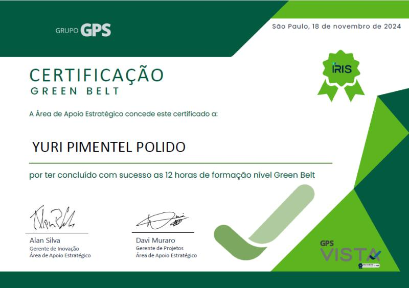

Certificados
Aperfeiçoamento em BI com Power BI


Analista de Dados, Inovação, Projetos, Qualidade e Melhoria Contínua. Já atuei em inteligência de mercado no ramo de bebidas e atualmente lidero os setores de Dados e Inovação para Saúde e Segurança do Trabalho na indústria.
Founder
Atuação como professor auxiliar em educação Especial
Assistente Administrativo
Estagiário em Análise de Dados
Coleta, organização, análise, compartilhamento e monitoramento de informações, oferecendo suporte em dados para todos os setores da empresa, com foco em comercial e logística. Operações com Excel avançado, automatização de processos com VBA - Excel, vinculação à bancos de dados às planilhas com DBMaker e SQL Server. Operações com Tableau. Criação de rotinas, coleta e monitoramento de informações em Pipefy.
Desenvolvimento de projetos e otimização de processos através de checklists e rotinas personalizadas em sistemas internos. Especialização em dados. Extração em SQL Server, PostgreSQL e API’s Rest para coleta e organização, e Power BI e Excel, para criação e manutenção de dashboards dinâmicos. Além de VBA Excel para automação de tarefas cotidianas dos mais variados setores Foco em transformar dados em insights acionáveis para impulsionar a excelência operacional.